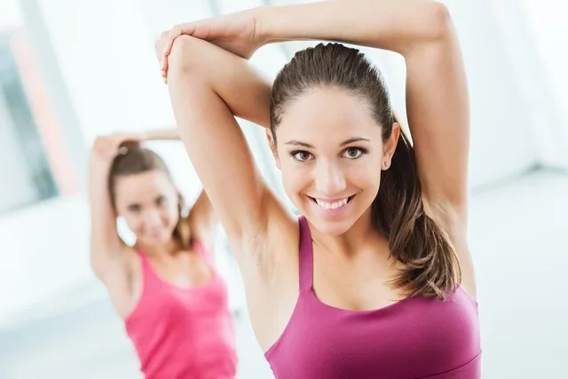

7 Exercícios para treino de tríceps em casa
O treino de tríceps em casa é simples, fácil e ajuda a atingir diferentes objetivos, desde tonificar, diminuir a flacidez, aumentar o volume muscular até melhorar o suporte ao cotovelo, a flexibilidade e a força do braço e deve ser adicionado à rotina de exercícios semanais.
Os exercícios para o tríceps podem ser feitos com ou sem a utilização de peso, no entanto é importante ter em consideração as condições físicas e as limitações do corpo para evitar qualquer tipo de lesão como ruptura do tríceps ou tendinite, por exemplo. Por isso deve-se fazer aquecimento antes dos exercícios, sendo uma boa opção movimentar os braços para cima e para baixo de forma alternada, várias vezes num ritmo acelerado ou fazer polichinelo, por exemplo.
O ideal é fazer uma avaliação médica antes de iniciar qualquer atividade física e ter orientação de um educador físico que deve indicar o peso para cada exercício de forma individualizada.
Como fazer o treino de tríceps
O treino de tríceps em casa pode ser feito de 2 a 3 vezes por semana, em 2 a 3 séries de 10 a 12 repetições, dependendo do exercício. O ideal é escolher de 3 a 4 exercícios por treino.
Algumas opções de exercícios para fazer um treino de tríceps em casa são:
1. Tríceps no banco

O tríceps no banco ajuda a trabalhar a força e a resistência dos tríceps, além dos músculos dos ombros, das costas e do core, o que ajuda a fortalecer esses músculos e a melhorar o equilíbrio e a postura. Para fazer esse exercício não é necessário o uso de pesos, apenas cadeira ou banco.
Como fazer: pegar uma cadeira ou banco, sentar no banco e colocar as palmas das mãos no assento, próximas às coxas. Manter os braços no assento e mover o corpo à frente, com as pernas esticadas. Dobrar os cotovelos, descendo o corpo o máximo que conseguir até que os cotovelos formem um ângulo de 90 graus, apoiando o peso do corpo nos braços. Empurrar o corpo para cima para recomeçar o movimento. Fazer 3 séries de 10 a 12 repetições. Caso o exercício seja muito difícil é possível realizá-lo com os joelhos dobrados e aproximar os pés do corpo para realizar os movimentos de subida e descida.
2. Extensão de tríceps em pé

A extensão de tríceps em pé trabalha a força do tríceps, deltóides e trapézio e deve ser feita com o uso peso como halter ou, caso não o tenha, pode-se colocar um ou mais pacotes de 1kg de arroz ou de feijão dentro de uma mochila, ou então usar garrafa pet com areia dentro, por exemplo.
Como fazer: de pé com os pés separados na largura do quadril, segurar o peso com as duas mãos atrás da cabeça, com os cotovelos dobrados, formando um ângulo de 90 graus. Levantar o peso, esticando os braços para cima e abaixar o braço novamente para trás lentamente. É importante estar com o abdômen contraído e as costas retas.
O movimento deve ser feito inspirando o ar quando os braços estiverem para trás e expirando quando subir com os braços. Caso seja difícil fazer o exercício em pé, pode-se fazer sentado, desde que se tenha cuidado para a coluna ficar reta. Outra variante deste exercício é usar um peso em cada mão. Esse exercício pode ser feito em 2 a 3 séries de 10 a 12 repetições.
3. Extensão de tríceps deitado
A extensão de tríceps deitado é outra boa opção para os tríceps, pois trabalha força, resistência, além de estimular o aumento da massa e do volume muscular. Para alcançar esses objetivos, deve-se usar pesos como halteres, barra ou garrafa pet com areia dentro, por exemplo.
Como fazer: deitar no chão e dobrar ligeiramente as pernas, de forma a ficar com os pés apoiados no chão. Segurar um peso em cada mão, esticar os braços para cima apontados para o teto. Em seguida, dobrar os cotovelos para trás até que as mãos com os pesos estejam próximas aos ombros. Voltar à posição inicial. Repetir esse movimento por 10 a 12 vezes fazendo de 2 a 3 séries.
4. Tríceps coice
O tríceps coice é um exercício que ajuda a ganhar força e massa muscular nesta região e deve ser feito com o uso de peso como halter ou garrafa pet com areia, por exemplo.
Como fazer: apoiar as mãos e os joelhos no chão mantendo as costas retas e com o abdômen contraído. Levantar uma perna para o lado até altura do quadril, tendo cuidado para não curvar a coluna. Repetir esse movimento 15 a 20 vezes para cada perna por 4 a 5 séries.
5. Elevação lateral dos braços
A elevação lateral trabalha a força e resistência dos tríceps, além dos músculos dos ombros ajudando a manter a postura e o equilíbrio. Esse exercício deve ser feito com o uso de peso como halteres e, caso não os tenha, pode-se usar garrafa pet com água ou areia ou mochilas com 1 ou 2kg de arroz ou feijão em cada uma.
Como fazer: de pé, separar as pernas separadas na largura dos ombros e flexionar levemente os joelhos. Segurar um peso em cada mão, com os braços alinhados ao corpo. Levantar os braços de forma lenta até a altura dos ombros e voltar para a posição inicial lentamente. É importante contrair o abdômen, inspirar enquanto os braços estiverem alinhados ao corpo e expirar quando levantar o braços. Fazer 2 a 3 séries de 10 a 12 repetições.
6.Flexão de braço inclinada
A flexão de braço inclinada é exercício que ajuda a trabalhar a força e a resistência dos tríceps, bíceps e deltóides.
Como fazer: pegar um uma superfície para criar a inclinação do seu corpo como banquinho, cadeira, puff, bola de ginástica ou uma plataforma de exercício de step. Apoiar as mãos na superfície inclinada, com os braços alinhados ao corpo, em uma distância um pouco maior que a largura dos ombros e os pés no chão. O corpo deve reto com as costas alinhadas com o tronco. Contrair o abdômen, flexionar os cotovelos até que o peito encoste na superfície e retornar à posição inicial. Pode-se fazer 2 a 3 séries de 8 a 10 repetições cada, descansando de 60 a 90 segundos entre as séries.
7. Agachamento lateral
A prancha de antebraço é considerada um exercício completo, pois trabalha os tríceps, abdômen, core e outros músculos do corpo como os bíceps e ombros. Neste exercício não é necessário uso de pesos ou halteres.
Como fazer: deitar de barriga para baixo e então elevar o corpo, apoiando no chão somente os antebraços e as pontas dos pés, sempre com o abdômen e glúteos contraídos e cabeça e corpo retos, alinhados com a coluna vertebral. Deve-se ficar parada nesta posição o máximo de tempo. Pode-se começar com 30 segundos e ir aumentando o tempo aos poucos. Este exercício não é feito em séries.
O que fazer depois do treino
Após o treino de tríceps, deve-se fazer alongamentos para ajudar a relaxar a musculatura, tonificar os músculos, melhorar a flexibilidade, aumentar a circulação e prevenir lesões.
1. Alongamento horizontal

O alongamento horizontal deve ser feito em pé para permitir alongar bem os tríceps aumentando a flexibilidade e a amplitude dos movimentos do braço.
Como fazer: de pé, com as pernas afastadas na largura dos ombros e joelhos levemente flexionados, colocar o braço direito atravessado na frente do corpo, na altura dos ombros. Com o braço esquerdo, segurar o braço direito nesta posição pressionando o braço direito no peito. Manter essa posição por 30 segundos e repetir com o braço esquerdo. Pode-se fazer 3 a 4 repetições para cada braço.
2. Alongamento sobre a cabeça
Esse alongamento, permite alongar os tríceps, peitoral e coluna, e deve ser feito em pé ou sentado.
Como fazer: levantar um braço e dobrar o cotovelo, colocando a mão em direção às costas ou nuca. Com o outro braço, puxe o cotovelo em direção à cabeça para alongar o tríceps. Fazer esse movimento por 20 a 30 segundos. Repetir com o outro braço. Esse exercício não é feito em séries.